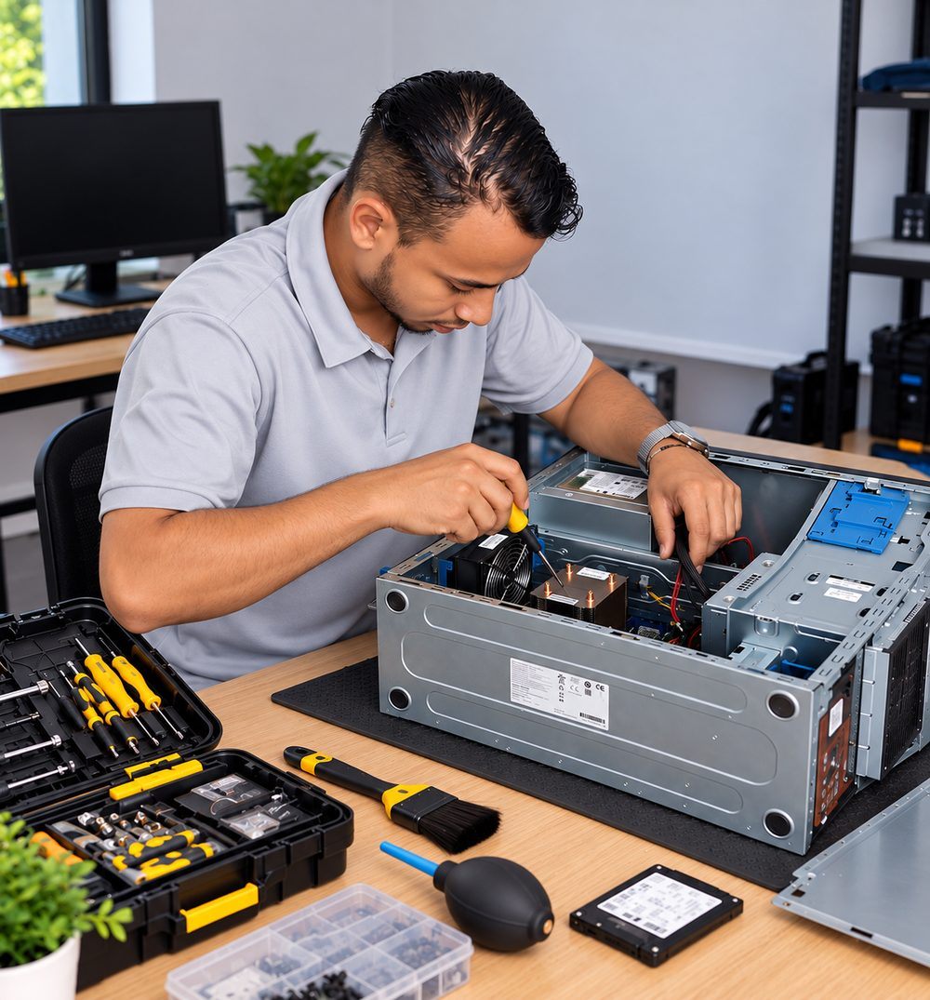

Soy Bayron Vásquez, tecnólogo en desarrollo de software y redes con más de 4 años de experiencia en soporte e infraestructura, entre trabajo independiente y como empleado. Ayudo a personas, emprendimientos y negocios a mantener sus equipos y su red funcionando, y a construir páginas web, aplicaciones y bases de datos a la medida.
4+ añosde experiencia, entre trabajo independiente y como empleado
390+ pruebasautomatizadas en mi proyecto principal, con integración continua
2 aplicacionescompletas, publicadas en línea y con su código a la vista
Servicios
Qué puedo hacer por tu negocio o tu equipo
Soluciones para personas, emprendimientos y pequeños negocios. Sin tarifas de catálogo: cada trabajo se cotiza según su alcance, y el botón de cada servicio abre una conversación de WhatsApp con tu necesidad ya escrita. Toca una tarjeta para ver qué incluye, con qué la respaldo y las evidencias.
● Disponible: lo hago habitualmente● Por proyecto: se evalúa antes de cotizar● Bajo consulta: depende de tu caso
Disponible
Resuelve: Equipos lentos, que no encienden, con virus o con fallas de hardware o software.
Evidencias reales · 3

Diagnóstico claro de qué falla y por qué
Mantenimiento preventivo y correctivo
Equipos de escritorio, portátiles e impresoras
Alcance: Diagnóstico, reparación de software, limpieza y mantenimiento. El cambio de piezas se cotiza aparte.
Estos proyectos muestran cómo trabajo. RespiraKids es un proyecto académico y CEFAE un producto propio: no son trabajos contratados. Cada uno se identifica por su naturaleza real y todo lo que se muestra se puede verificar.
Proyecto académico · demostración técnica en línea
RespiraKids
Plataforma web para el seguimiento de enfermedades respiratorias en niños menores de 5 años: los cuidadores registran síntomas y reciben un semáforo de riesgo; los profesionales ven la evolución de los niños que les autorizan.
Problema que resuelve
Un cuidador no sabe si el cuadro de su hijo es de observación o de consulta, y el profesional no tiene la evolución ordenada.
Mi participación
Diseñé y programé la aplicación completa: backend, base de datos, interfaz, pruebas y despliegue (proyecto de grado, 2026).
Decisiones técnicas
La clasificación la deciden reglas clínicas versionadas (AIEPI, MinSalud) y no un modelo de aprendizaje automático, que solo apoya al profesional y se entrenó con datos sintéticos. Cada evaluación guarda qué versión de reglas la produjo. Acceso por niño, consentimiento y auditoría de datos de menores.
Funcionalidades
Semáforo de riesgo con fuente clínica, historial y gráficos, mensajes y videollamada, medicamentos, asistente con IA, panel profesional y administración.
Calidad
Más de 390 pruebas automatizadas, integración continua sobre PostgreSQL, despliegue con Nginx y Gunicorn. Está en línea y se prepara una prueba con usuarios reales.
Topologías simuladas para practicar direccionamiento IP, enrutamiento y conmutación, con una guía paso a paso documentada. Respalda mis servicios de redes y es práctica de laboratorio, no un trabajo para un cliente.
EVE-NG
Cisco
LAN
Trabajos para clientes
Clientes y referencias
He atendido clientes como trabajador independiente y como empleado en empresas e instituciones. Aquí publico solo lo que tengo permiso de mostrar, como las fotos del rack en la ficha de Redes. Si necesitas referencias o casos concretos, pídemelos.
Cómo trabajo
Un proceso simple y sin sorpresas
Quiero que sepas qué se va a hacer, cuánto cuesta y cuándo termina antes de empezar.
ConversamosMe cuentas qué necesitas y qué problema quieres resolver.
DiagnósticoReviso el caso y confirmo qué se puede hacer y qué no.
PropuestaRecibes el alcance, los tiempos y la cotización por escrito.
AprobaciónEmpiezo solo cuando estás de acuerdo con la propuesta.
EjecuciónHago el trabajo y te voy informando los avances.
EntregaTe explico lo que hice y cómo usarlo o mantenerlo.
Perfil
Quién está detrás
Cartagena, Colombia
Tecnólogo en Desarrollo de Software
Tecnólogo en Redes de Datos
Técnico en Sistemas
Empecé en el soporte técnico y la infraestructura —equipos, redes y usuarios reales con problemas reales— y de ahí pasé a construir software. Esa mezcla es lo que me permite entender tanto la falla en el computador como el sistema que la origina.
Trabajo con Python, Flask y bases de datos relacionales, con pruebas y despliegue propios. Mi formación incluye certificaciones de redes y ciberseguridad (Cisco, Google). Mi inglés es básico, así que me comunico en español.
Busco mi primer rol como desarrollador backend o web junior en Python. Mis proyectos están arriba, con código y documentación; el resto lo cuento mejor en una conversación.
Cada trabajo se cotiza según su alcance. No publico tarifas fijas: cuéntame qué necesitas y te respondo con una propuesta por escrito.
¿Atiendes en sitio o a distancia?
Estoy en Cartagena, Colombia. Según el servicio atiendo en sitio o a distancia; lo definimos al cotizar.
¿Ya has trabajado con clientes?
Sí. Llevo más de 4 años de experiencia en soporte e infraestructura, combinando trabajo como independiente y como empleado en empresas e instituciones. Los casos concretos los comparto como referencias; en este sitio muestro mis proyectos y las fotos de los trabajos que tengo permiso de publicar.
¿Puedo ver cómo trabajas antes de contratar?
Sí. RespiraKids y CEFAE Proyector están en línea y su código está en GitHub, con documentación y pruebas.
¿Qué pasa con los datos que escribo en el formulario?
No se guardan en este sitio. El formulario arma el mensaje y abre WhatsApp o tu correo con el texto ya redactado; solo se envía cuando tú pulsas enviar allí.
Ideal si: Quieres que tu negocio tenga presencia en línea o llevar un proceso a una aplicación web.
Qué incluye
Conversación para definir qué necesitas y qué no
Diseño adaptable a celular y computador
Desarrollo de la página o aplicación
Publicación en línea y explicación de cómo usarla
Alcance
Se define y se cotiza después de conocer la necesidad. Ejemplos reales: RespiraKids y CEFAE Proyector.
Con qué lo respaldo
RespiraKids: aplicación web completa, en línea en respirakids.com (proyecto académico, datos de demostración).
CEFAE Proyector y su página de producto, publicados en GitHub Pages (producto propio).
Ambos están hechos con Python, Flask, HTML y CSS.
Imágenes
RespiraKids: panel del cuidador (datos ficticios)La misma aplicación, adaptada a celularCEFAE Proyector: panel de controlCEFAE Proyector: lo que ve el públicoPáginas adaptables a celular y computadorDe la idea a tu página publicada
Desarrollo de software y funcionalidades personalizadas
Ideal si: Necesitas una herramienta a tu medida o automatizar algo que hoy haces a mano.
Qué incluye
Definición del alcance conversando contigo
Desarrollo por fases, con entregas que puedes revisar
Pruebas automatizadas del código
Documentación básica de lo construido
Alcance
Desarrollos pequeños y medianos, por fases, con una evaluación previa del alcance.
Con qué lo respaldo
RespiraKids: más de 390 pruebas automatizadas, integración continua sobre PostgreSQL y despliegue propio con Nginx y Gunicorn.
CEFAE Proyector: aplicación de escritorio con instalador para Windows y sistema de licencia.
Todo el código está público, con README y documentación.
Imágenes
RespiraKids: semáforo de la clínica (datos ficticios)RespiraKids: resultado con la fuente de cada señalCódigo con pruebas automatizadasDesarrollo por fases